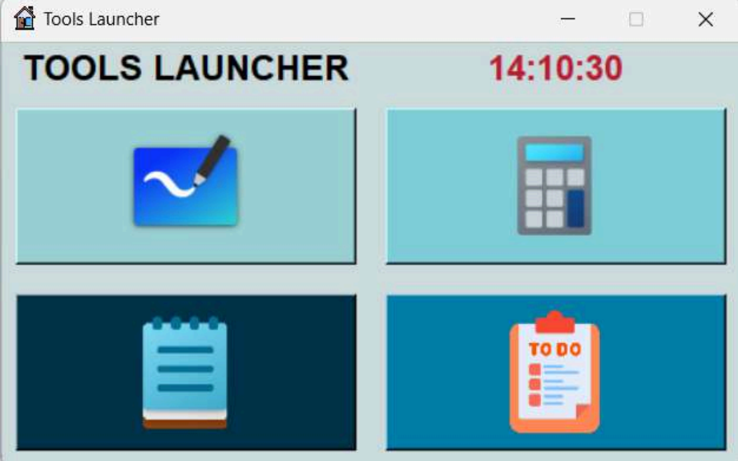

Tools Launcher Program
A desktop utility application built with Python.

Project Background
This project aims to develop a tools launcher program using Python and the Tkinter library for the GUI. The launcher provides easy access to four essential tools: a calculator, a to-do list, a notepad, and a whiteboard, enhancing user productivity by centralizing common utilities in one simple interface.